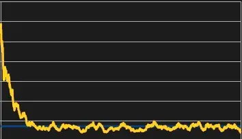
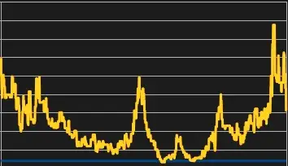
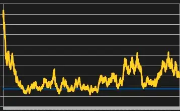
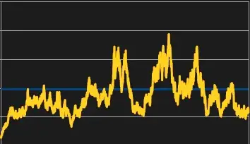

Advanced Flea Simulator
- Downloads
- 6,360
- Favourites
- 13
- Mod lists
- 32
Want the flea market to be less static than vanilla? Want the flea prices to be not as dependent on Big Silly Goose’s changes to 1.0?
This mod aims to simulate a flea market with YOUR specifications
- Item price simulation
- Dynamic offer generation
- Dynamic position based sell chance and delay
- Early wipe price simulation
- Progressive Flea Support
- Advanced configuration
Some items can be calm:

Some items can be chaotic:

Some can be in-between:

And some can be weird:

Every item can be assigned different simulation data that changes how they are simulated by the mod. Even modded items can be simulated!
Item Simulations
The mod will simulate the flea market with prices going up in down in varying degrees of unpredictability. How often these prices are simulated and the behavior of every item is configurable.
Dynamic Offers
Creates fake PMC offers based on the configured supply of an item. High supply items such as bundles of wires will have more available offers with higher quantities. Rarer items such as marked keys generate with less offers.
Dynamic Selling
Adds a custom system for determining if your item offers get sold and when they get sold. The chances are dependent on how much the configured supply and demand an item has and what position your item is when sorted by price. Your item has the largest chance of being sold when cheaper than any other item! But when its more expensive than others, it will take longer and have a bigger chance at not selling.
Early Wipe Simulation
Features an ability to modify prices and features based on the look of the prices during an early wipe in live EFT. The length of early wipe depends on configuration. The early wipe will make the prices start out far from their usual and then return to their regular prices by the end.
Progressive Flea Support
Features a progressive flea configuration which allows configuring categories or specific items to be locked in the flea. This feature removes the need to configure SPT’s built in flea config (which isn’t recommended)
The system also features default values and a configuration to allow flea from level 1.
It starts off disabled but can be enabled with a preset config option. The default config comes with EFT 1.0’s level locks.
Advanced Configuration
Most features in this mod are configurable through a preset system! Check out the Config tab for more info.
The default config currently needs some more tweaking. Some outlier items may behave differently than expected.
This mod features a preset based system to allow for easier config saving and transfer.
Some values will not change an already simulated market! You can fully reset by deleting state.json
A default config is included with the files. It features comments that describe what every value does.
To make your own config, first duplicate the default config file in the Presets folder, change the name and author, and then set your new config in loader.json. (The mod will not cover for making out of bound variables or making min variables higher than max.)
Feel free to share your config by creating an addon for this mod!
The config operates off of assigning items to categories and then using the categories for how the item should be simulated. Every config should come with a default category that sets the default values for each other category, if another config doesn’t have a value it will be sourced from this category.
Features are also togglable through the core config. If you don’t want offers to be generated, selling chances to be changed, or early wipe prices to be simulated, then you can turn them off.
All items are very expensive
This is typically caused by early wipe prices which most items start high and go much lower, they can be disabled within the config.
Items won’t sell
If the items are being sold cheaper than every other item, the demand for the item might be low. If the demand is really low the item can take up to an hour in the default config.
Item price not behaving as it should/mod behavior is not as expected
The default config might not be suited to how you want the market to work. I suggest creating a new config using the instructions in the Config section.
Incompatible
Delayed Flea Sales - This mod overrides the same code.
Compatibility Issues
Fast Sell Mods - Typically these will place the item for sale at a price that will sell the best for vanilla SPT so if using one of these, expect that they might not sell as frequently.
Live Flea Prices - This mod adjusts prices on a regular basis. Compatible if simulation is disabled AND Live Flea Orice’s refresh flea config setting is set to false.
Dynamic Flea Prices - Price adjustments are not compatible unless simulation is disabled.
Compatible The Blacklist
There are several debug features to help test item simulations. They are all featured in the core section of the config.
The most notable debug tool is the debugSimulation, if you set it to true and enter an item’s tplId in debugItem, it will generate a .csv file that features 3 months of price data. The number of rows generated is dynamically based on your simulation rate.
Version
1.4.1
Simulation can now be disabled in the preset config which allows for the use of the sell and/or buy system with vanilla prices or other pricing mods.
Version
1.3.0
Removed progressive flea config
(IF YOU USED A CUSTOM PROGRESSIVE CONFIG, INSTALL THE STANDALONE MOD AND MIGRATE THE CONFIG SETTINGS BEFORE STARTING SERVER!)
Increased default minimum demand sell chance to 90% from 50%
Clarified a few comments in the default config
Version
1.2.2
More overflow precautions
Version
1.2.1
fixes item prices being too high or too low crashing the mod
Version
1.2.0
Added a “deals” system where when you sell items further below minimum, the chances of selling rise and the delay drop.
Made the demand to sell delay curve exponential. The max delay from selling an item gets higher as demand decreases instead of being linear.
Changed some data points
Version
1.1.0
Added progressive flea configuration which allows for locking specific items or categories behind levels. It is disabled by default. Added simulation interpolation which runs simulations for time missed when server was offline. Fixed offer count slowly reducing over time
Version
1.0.2
added config feature to disable early wipe when creating fresh market if a profile exists over a specific level fixed issue where loader.json causes a crash fixed crash when an non-indexed item has offers created for it
Version
1.0.1
Fixes loader.json not being generated
Version
1.0.0
Initial Release